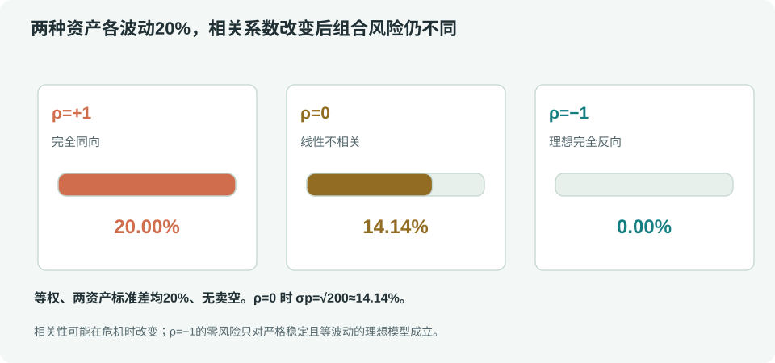
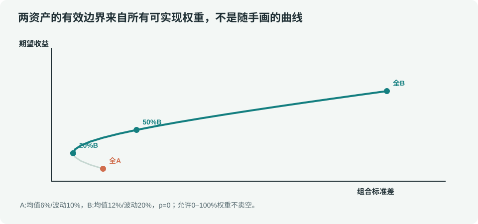
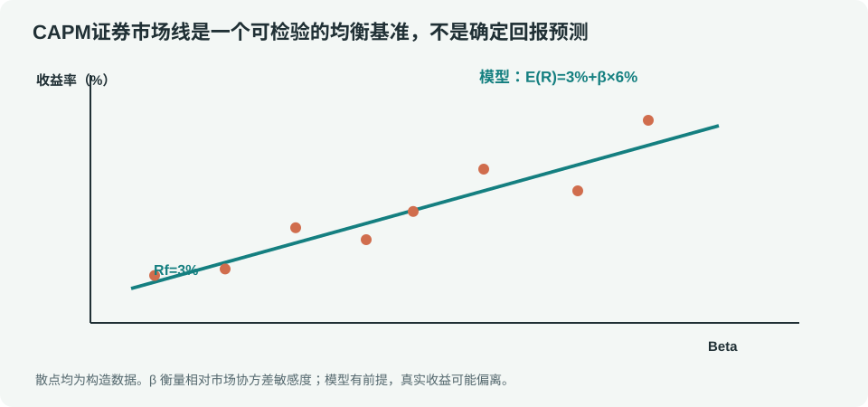

CHAPTER 15 · PORTFOLIO RISK
现代投资组合理论：协方差、有效前沿与CAPM
分散化作用于共同波动；模型的前沿只在预期收益与协方差估计可靠时才有解释意义。
资产A和B都很波动，为什么一半一半的组合可能更稳？
假设两种资产各自的年度收益标准差都是20%，但它们并不总在同一时间上涨或下跌。把资金等分给A和B后，组合收益的波动不仅取决于单个资产波动率，还取决于两者收益协方差或相关系数。当两者不完全同向时，部分波动可以互相抵消。
这就是现代投资组合理论（MPT）的数学起点。分散投资不意味着排除了市场风险，也不保证在危机中不下跌；它只是在模型假设下，改变各资产收益共同波动带来的组合方差。
协方差与相关系数：风险不能只把百分数相加
设资产A/B的标准差分别为σA、σB，相关系数ρ在−1和1之间。在不卖空且权重和为1的两资产组合中，方差包含两个各自波动项，以及一个交叉协方差项。该交叉项是分散效果的关键；仅把两项标准差加权平均会忽略共同波动。

当权重各50%、波动率均20%，ρ=+1时σp=20%；ρ=0时σp=√200≈14.14%；ρ=−1时σp=0。最后一种零波动仅对完美负相关、等波动且相关性保持不变的理想模型成立，现实资产相关性会随市场变化。
均值–方差优化与有效前沿：定义“更好”的组合
在同一期望收益水平上，波动率越低的组合在均值–方差准则下越有效；在同一波动风险水平上，期望收益越高越有效。所有可行权重产生的风险与收益点构成机会集，其中不被其他可行组合支配的上侧边界称为有效前沿。它不是所有人都应买的单一组合，因为投资者风险厌恶与约束各不相同。

例图中只允许A/B非负权重且总和1。A全部持有时均值6%、风险10%；B权重20%时均值7.2%，组合风险约8.94%，同时提高期望收益、降低波动。故全A点被B权重20%点均值–方差支配。增加资产、加入卖空、杠杆、交易成本和持仓上限后，可行集与前沿都会改变。
有效前沿最脆弱的环节：输入均值与相关性的估计误差
均值–方差优化依赖未来期望收益向量μ与协方差矩阵Σ。它们通常只能从历史样本或模型估计，且小小的均值误差就可能导致极端权重。对大量资产用短历史区间求逆Σ还可能出现数值不稳定、过拟合或不可逆问题。
实践中常施加单项权重上限、行业暴露限制、换手和交易成本约束，或采用协方差收缩、稳健优化与样本外滚动检验。标准差也不能单独描述偏态、极端损失、流动性和跳空风险，因此“风险降低”在此特指模型中的收益波动率降低，不是任何意义的本金安全。
CAPM把市场协方差风险归纳成 Beta，但不是收益承诺
资本资产定价模型CAPM在若干均衡假设下，将证券预期收益分解为无风险收益率Rf与市场风险溢价β(E[Rm]−Rf)。Beta=Cov(Ri,Rm)/Var(Rm)，刻画资产相对市场共同波动敏感度。它不表示企业总风险，也不承诺高Beta投资必有高实际收益。

若Rf=3%、市场风险溢价6%、β=1.2，则CAPM模型要求回报为3%＋1.2×6%＝10.2%。这属于模型隐含要求收益，不是对某只股票下一年涨幅的预测。不同市场代理指数、时间窗口、对冲方式和回归频率会改变Beta估计。
从CAPM到多因子：Alpha不是免费的收益标签
实证资产定价经常使用市场、规模、价值、盈利、投资等因子作为风险与收益共同变化的解释变量。Fama–French 2015五因子模型使用市场、SMB、HML、RMW和CMA等因子，但模型并非保证所有市场和年份都解释完全部收益；不同市场的制度与样本期会导致结果变化。
在回归中截距通常称为Alpha，但它依赖因子选择、收益频率、交易成本与估计误差。将样本内残差均值写成“管理人一定可获得的超额收益”属于过度解释。必须报告统计不确定性与样本外表现，还要分析因子收益与实际可交易组合之间的差距。
组合风险控制必须考虑相关性断裂和流动性
危机时原本相关性较低的资产可能同时被卖出，相关系数和波动率都可能上升。杠杆、保证金、赎回和流动性约束使实际损失超过历史标准差所暗示的普通波动。因此组合研究还需看集中度、回撤、尾部损失、情景冲击、再平衡成本及交易执行能力。
| 模型对象 | 回答的问题 | 不能替代什么 |
|---|---|---|
| 方差/相关 | 收益共同变化有多大 | 违约概率、极端尾部损失 |
| 均值–方差有效前沿 | 给定μ、Σ、约束下的有效组合 | 输入预测可靠性 |
| CAPM Beta | 相对市场的系统敏感度 | 所有个股风险、未来实现收益 |
| Alpha/多因子 | 在某因子模型下未解释的收益 | 可稳定获得的样本外超额收益 |
完整组合研究如何被复算与推翻？
练习与复核
- 两个20%波动率资产等权，ρ=0时组合风险为什么是14.14%，不是20%？
- 为什么图中的A全持有点会被加入20% B的组合支配？
- Rf=3%、市场风险溢价6%、β=1.2，模型要求收益率是多少？
- 什么原因会使历史相关系数在未来危机中失效？
- 一条样本内Alpha为正的回归结果，距离可交易的超额收益还缺什么证据？
如果研究者不能复算预期收益、协方差、权重与风险，并解释其估计误差，就不能仅凭一张漂亮的“有效前沿”宣称组合完成了优化。
一手研究与专业资料
- CFA Institute 2026：Portfolio Mathematics
- CFA Institute 2026：Portfolio Risk and Return Part I
- CFA Institute 2026：Portfolio Risk and Return Part II
- CFA Institute 2026：Active Portfolio Management Analysis
- Fama & French (2015) A Five-Factor Asset Pricing Model, Journal of Financial Economics
组合参数的年度估计不同于实时风险，所有例子仅教学使用。